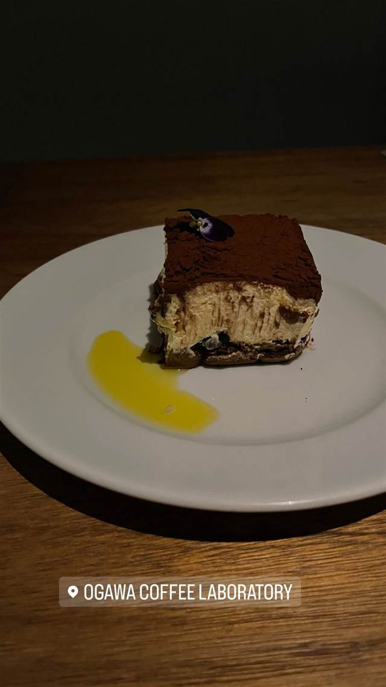
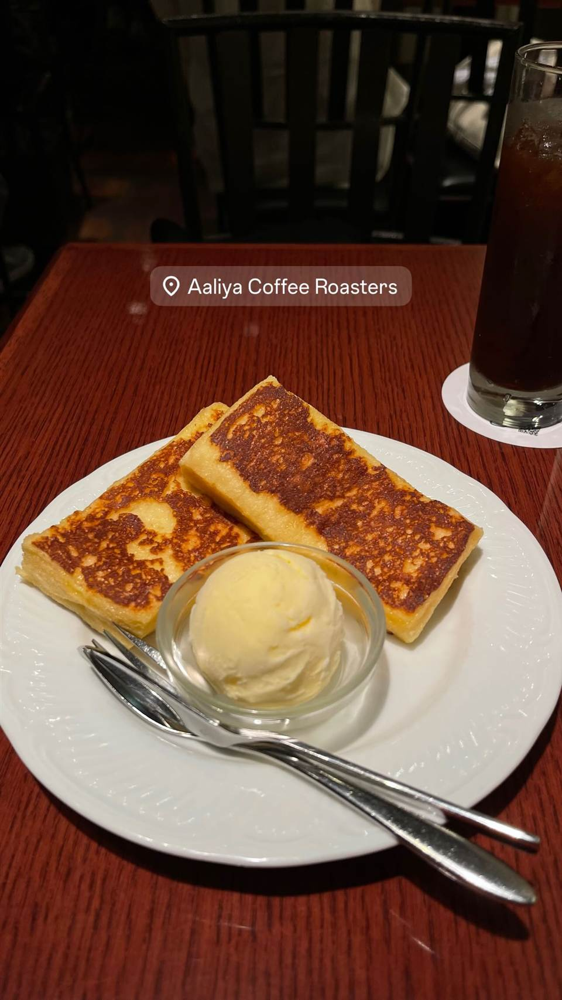
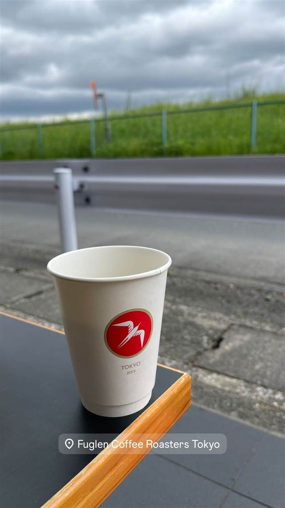
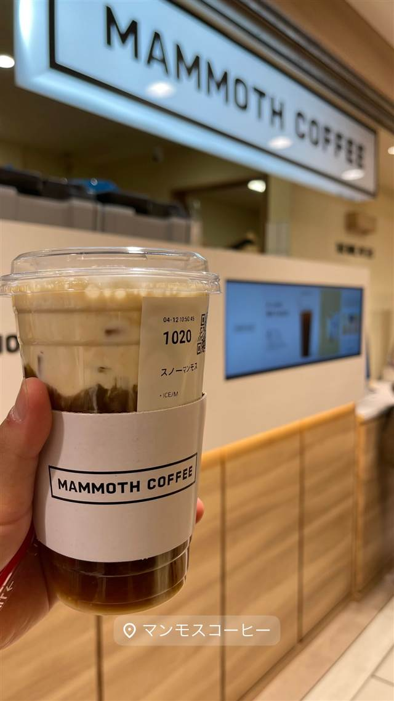
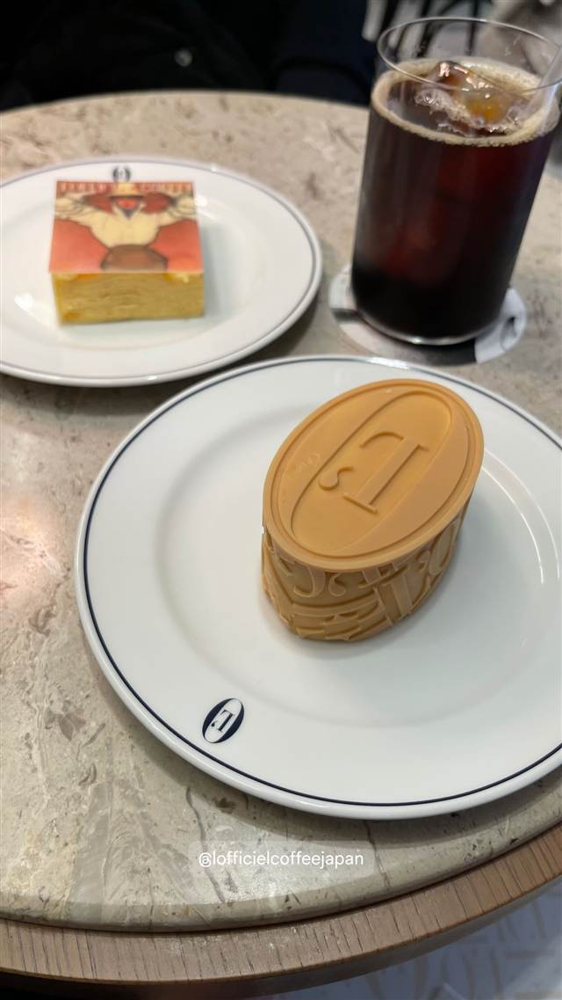
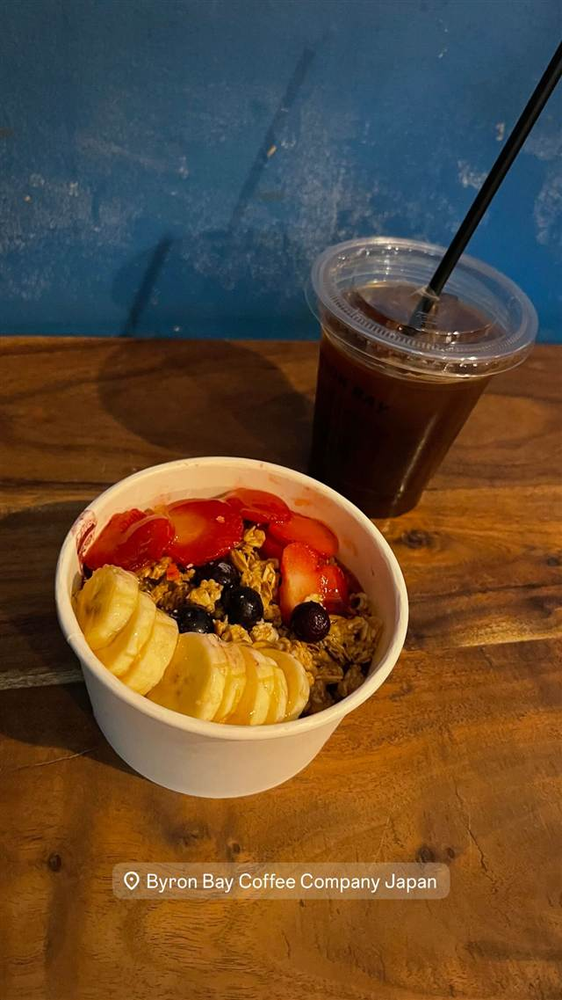

OGAWA COFFEE LABORATORY 桜新町
小川珈琲の新業態で楽しむコーヒーと炭火焼き料理のペアリング
OGAWA COFFEE LABORATORY
京都の老舗コーヒー焙煎会社「小川珈琲」が2020年に桜新町で開いた新業態のフラッグシップ店。コーヒーと炭火焼き料理のペアリングをテーマに、常時19種類以上のコーヒーを揃え、産地や農園の情報を記したカードを添えて提供している。
TRIVIA
へえ、という話
- 注文したコーヒーには産地の農園情報を記したカードが付いてくる
- 京都の老舗焙煎会社「小川珈琲」が炭火焼き料理とのペアリングを打ち出した新業態1号店
| 創業 | 2020年8月1日開業 |
|---|---|
| 系譜 | 京都の老舗コーヒー焙煎会社「小川珈琲」が手がける新業態のフラッグシップ店 |
| 看板 | コーヒーと炭火焼き料理のペアリング |
| こだわり | 常時19種類以上のコーヒーを用意し、1杯ごとに産地・農園・精製方法やテイスティングノートを記したカードを添えて提供 |
| 予算 | 昼 ¥1,000～¥1,999 夜 ¥3,000～¥3,999 |
| 場所 | 桜新町駅 東京都世田谷区新町3-23-8 エスカリエ桜新町1F |
| 注意 | 7:00〜22:00（L.O.21:30）、無休 |
食べたもの：ティラミス
NEARBY
近い店・同じ系統の店
-

★ コーヒー 新宿三丁目 AALIYA COFFEE ROASTERS 37年続く本店譲りのフレンチトーストを並ばず味わえる 昼 ¥1,000～¥1,999 夜 ¥1,000～¥1,999 -
 ★
コーヒー 保田駅
音楽と珈琲の店 岬
小説『虹の岬の喫茶店』のモデルになった鋸山ふもとの喫茶店
昼 ～¥999
★
コーヒー 保田駅
音楽と珈琲の店 岬
小説『虹の岬の喫茶店』のモデルになった鋸山ふもとの喫茶店
昼 ～¥999
-

コーヒー 登戸駅 FUGLEN COFFEE ROASTERS TOKYO 渋谷から移転した焙煎拠点、オスロ仕込みの浅煎りノルディックロースト 昼 ～¥999 夜 ～¥999 -

コーヒー 東京駅 mammoth coffee 東京駅ヤエチカ店 韓国で700店超展開、Lサイズ約940mlの大容量コーヒー -

コーヒー 表参道駅 L'OFFICIEL COFFEE 1921年創刊の雑誌ロフィシエルが開いた世界初のコーヒーショップ 昼 ¥1,000～¥1,999 夜 ¥1,000～¥1,999 -

コーヒー 浜松町・大門 Byron Bay Coffee 大門店 バイロンベイ発、オーガニック志向のアサイーボウルとコーヒー